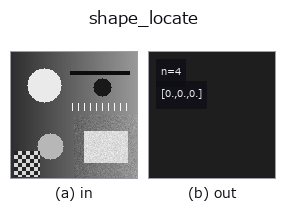

matching op• Data kinds: image → match
• Call: fullseye.apply(img, "shape_locate", a=0.5, b=0.5) (2-D model = एक image + दो scalar knobs a,b∈[0,1])
• HALCON समकक्ष: find_shape_model (अर्थ और parameters समझने के लिए HALCON reference उपयोगी है)
• GPU: नहीं (केवल CPU reference implementation)

*Figure synthetic 128×128 input पर सच में चलाकर मिला output है। बाईं ओर input, दाईं ओर output। Point clouds ऊपर से देखे गए scatter के रूप में (brightness = z), 1-D series line के रूप में, volumes z दिशा में maximum-intensity projection के रूप में, videos बीच के frame के रूप में, complex images amplitude के रूप में, और जो return values चित्र नहीं बन सकते वे स्वयं values के रूप में दिखाए जाते हैं।*
*Knob a output नहीं बदलता (मापा गया: 0.1 / 0.5 / 0.9 पर एक जैसा)।*
*Knob b output नहीं बदलता (मापा गया: 0.1 / 0.5 / 0.9 पर एक जैसा)।*
Rotation को ध्यान में रखने वाला template matching (shape-based matching)। HALCON के find_shape_model (Find the best matches of a shape model in an image.) के समकक्ष है।
a, b उपयोग नहीं होते — template को _ncc_locate की तरह ही set_match_template से पहले से register किया जाता है। template को 0°〜330° तक 30° के step से घुमाते हुए हर बार _ncc_map (NCC) निकाला जाता है, और सभी position और सभी कोणों में सबसे अच्छा correlation [correlation, y, x, angle] के रूप में लौटाया जाता है। कोण का step मोटा (30°) होने से HALCON के find_shape_model जैसी continuous angular precision नहीं मिलती — यह मोटे तौर पर orientation पहचानने के लिए है (step चुनकर उससे बारीक refine करने के लिए matching.shape_locate_fine)। template set न हो तो [0,0,0,0]।
घुमाए गए template के चारों कोने correlation में नहीं गिने जाते (★2026-11-09 op जाँच)। reshape=False से घुमाने पर कोने बाहर से आते हैं, इसलिए उन pixels को mask से हटाकर बाकी pixels पर ही Pearson correlation निकाला जाता है (matching._MaskedNCC)। पहले 0 से भरे कोनों को भी template का हिस्सा मानकर correlation लिया जाता था, इसलिए जिन images का background 0 नहीं है उनमें सही कोण पर भी score संरचनात्मक रूप से गिर जाता था (background 0.5, 30° घुमाव: 0.7794 → सुधार के बाद 0.981)। सिर्फ़ वे position खोजे जाते हैं जहाँ घुमाए गए template के सभी valid pixels image के अंदर हों (कोण 0 पर यह ncc_locate के full-overlap जैसा ही है, और score rounding तक मेल खाता है)। NaN / inf वाली image पर FsValueError (pipeline path ops.RT / run_stages में 4 तत्वों वाला [0,0,0,0] लौटता है और fs.fallbacks() में दर्ज होता है)।
• gallery2d_contour_measure family guide
• Sample data catalog (DL URL / license) — 2-D के लिए skimage.data (BSD/public) + synthetic, 3-D के लिए real data sources (Stanford/PDS आदि) के DL URL।
• Operators का स्रोत और संदर्भ — इस op family के मूल research/methods के स्रोत।
• Algorithm का मानक स्रोत (लेखक, वर्ष) और उपयोग ऊपर की family usage guide में दिए गए हैं।
नीचे का program सच में चलता है, यह जाँचा गया है (figure वाला ही input)। Studio की help में यह block buttons बन जाता है, जिनसे इसे वहीं load करके चलाया जा सकता है।
shape_locate 0.50 0.50
▸ यह pipeline load करें · Load करके चलाएँ
• gallery2d_contour_measure — py -3.11 examples/gallery2d_contour_measure.py
• poc_template_tracking — py -3.11 examples/poc_template_tracking.py
match को input के रूप में लेते हैं)matching)*Provenance: ops.py — 2D operator registry. यह per-op note tools/opdocs.py md से अपने-आप generate होता है (हाथ से edit न करें)।*
© 2026 Kazufumi Furuse — Fullseye operator documentation. Licensed under Apache-2.0.